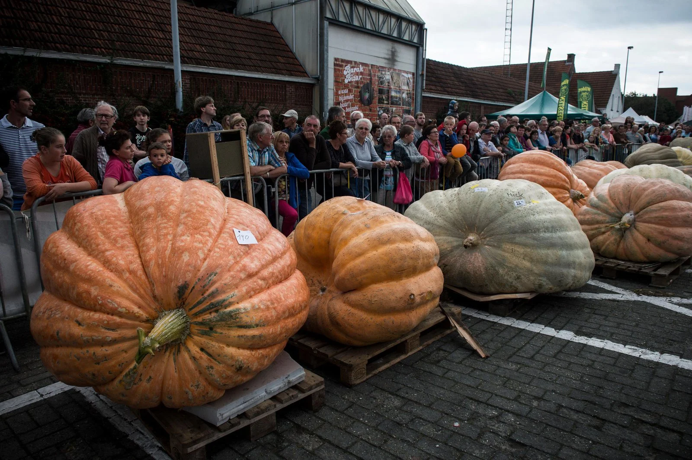
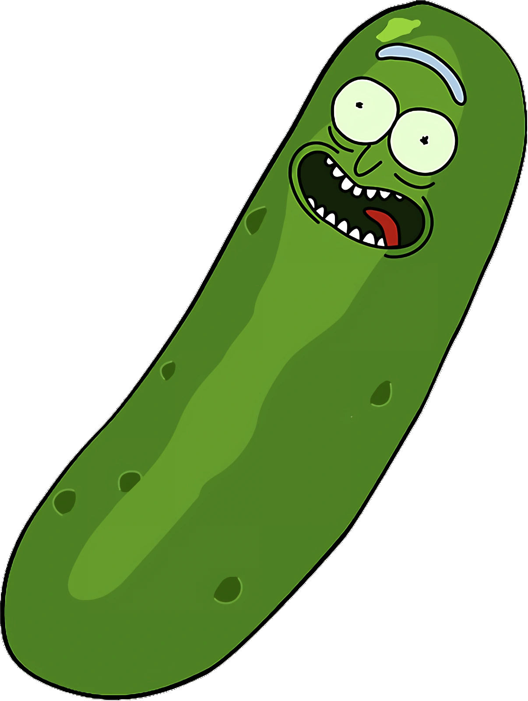

By Emilio Baceda · 5 minute read
What's up homies? Welcome to my super rad "Cool Cositas" blog where I post cool stuff every week! This week I went to a Biology Convention in Belfa- STOP ROLLING YOUR EYES! I'll make it interesting, I promise (or maybe not). So as I was saying, I went to the Biology Convenction in Belfast. As soon as I stepped in, I was blinded by white everywhere, the paint on the walls, the lights, the lab coats. It was like staring straight into a flashlight!
I could see there was a person who was handing out some free lab coats, wanting me to join the cool kid's club. I think I looked gorgeous in that old, crusty outfit. So there are basically 4 sections in the convention itself. 2 are boring, and 2 are interesting.
First section was the Biological Warfare Convention. Now before you think it's some sort of FPS multiplayer shooter like Call of Duty, it's not. It's where people create diseases to kill living things, like us. This sub-convention was made to prevent production of those thingies.
Second section is the Biological Diversity convention,, it basically tries its best to keep life diverse and stop endangerement of living species to have a more colorful world. We're pretty selfish you know? At least I know I am. We are basically making more organisms extinct without noticing it.
Let's get into the interesting sections. Section 3 (aka my fav). This is a plant growing competition to see who can get the biggest of each plant. I liked the pupmkin, it was the biggest thing I've ever seen. The thing is literally fenced off from the public. It's 3 times bigger than I am, to put it into perspective. My favourite one was the giant eggpla-

Final section was just some merchandise. There were t-shirts with fancy words like: "Look Morty, I'm a pickle, I'm pickle Rick!"< or "Ok Bloomer". It was a lot of fun looking at the dad-jokey shirts.

All in all, I think I enjoyed my visit to the Biology Convention, many people were nice and just wanted the world to be a better place. Finally people to share my thoughts with.
This is my first and hopefully last post to my blog, bye, love ya.